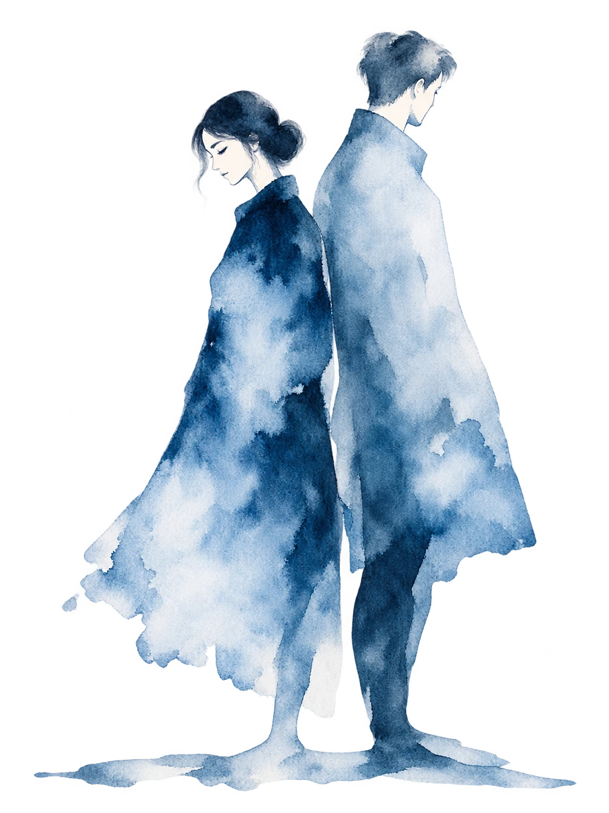

Для одного человека
Индивидуальная встреча
Для тех, кто хочет разобраться в своей ситуации.
- Подготовиться к разговору с партнёром
- Лучше понять свои границы
- Прийти, даже если партнёр пока не готов участвовать
50 минут4 500 ₽
Индивидуально и для пар
Помогаю говорить о сложном, слышать друг друга и замечать свои границы.

Не обязательно знать, с чего начать.
О психологе
Психолог, консультант по отношениям
Ко мне приходят люди, которым в близких отношениях стало трудно говорить и слышать. Кто-то ссорится из-за мелочей, кто-то молчит неделями, кто-то никак не решится попросить о самом простом.
Я не ищу виноватого и не раздаю оценок. Мы разбираем, что происходит между вами, и находим слова, которые можно сказать и услышать.
«Хороший разговор не обязан быть гладким. Он должен быть честным и безопасным для обоих.»
Разбор диалогов
Выберите ситуацию, похожую на вашу: сначала разговор, каким он часто бывает, потом — как можно сказать иначе.
От примеров к вашему разговору
Вы увидели, из чего состоит фраза: чувство, потребность и просьба. Ответьте на три вопроса о своей ситуации, и страница соберёт черновик, который можно поправить и взять с собой.
Подготовить свой разговорВаш разговор · три вопроса
Три вопроса помогут собрать мысли до того, как вы начнёте говорить. Ответы объединятся в черновик, который можно поправить и взять с собой.
Пишите то, что записала бы камера. Догадки и оценки вроде «ты специально» или «тебе всё равно» лучше оставить за скобками. Вместо «всегда» и «никогда» назовите один конкретный случай.
Нажмите, чтобы подставить
Чувство называется одним-двумя словами: обидно, тревожно, одиноко. Фраза «я чувствую, что ты меня игнорируешь» описывает мысль о другом человеке, а не чувство. Чувство в этой ситуации звучало бы так: «мне одиноко».
Потребность отвечает на вопрос «что для меня за этим стоит»: безопасность, внимание, уважение, возможность отдохнуть.
Примеры потребностей
Просьба касается действия, а не характера. «Будь внимательнее» остаётся пожеланием. «Напиши, если задерживаешься больше чем на полчаса» уже можно выполнить и проверить. Оставьте человеку право ответить «нет» или предложить своё.
Нажмите, чтобы подставить
Встречи
Встречи проходят онлайн или очно в Москве по записи, стоимость одинаковая. Выбранный формат попадёт в обращение ниже.
Для одного человека
Для тех, кто хочет разобраться в своей ситуации.
Для пары
Для двоих, кто хочет научиться говорить о трудном и слышать друг друга.
Онлайн-встреча проходит по видео. Ссылку на неё пришлю заранее. Понадобятся стабильный интернет, наушники и место, где вас не прервут.
Очные встречи в Москве по записи. Точное место сообщу после записи.
Время подбираем вместе. Вы пишете удобные дни и свой часовой пояс, я предлагаю свободные окна.
Перенести или отменить встречу без оплаты можно не позднее чем за 24 часа до начала.
Знакомство
Никто ничего не решает за вас. Мы знакомимся, разбираем ситуацию и вместе выбираем следующий шаг.
Расскажу, как я работаю. Вы расскажете, с чем пришли. Можно задать любые вопросы о формате.
Вы описываете, что происходит. Я уточняю, помогаю отделить факты от оценок и увидеть, что для вас важно.
Решаем, нужна ли дальнейшая работа, в каком формате и как часто. Бывает, что хватает одной встречи.
Частые вопросы
Если вашего вопроса здесь нет, задайте его в сообщении при записи.
Перейти к записиСпециальной подготовки не требуется. Если хотите, заполните практику «Подготовить разговор» выше и возьмите черновик с собой. Достаточно выбрать спокойное место и, если встреча онлайн, проверить связь.
Можно прийти одному. Работа над своими чувствами, просьбами и границами может изменить и то, как вы разговариваете дома. Уговаривать партнёра не нужно: когда он будет готов, вы сможете прийти вдвоём.
Нет. Я не ищу виноватого и не выношу вердиктов. Мы смотрим, как складывается ваше общение и что нужно каждому, чтобы услышать друг друга.
С этим можно прийти. Моя задача не в том, чтобы сохранить отношения любой ценой или подтолкнуть к расставанию. Я помогу прояснить, чего вы хотите, что вам мешает и какие шаги возможны.
Начните с индивидуальной встречи: совместная работа в такой ситуации может быть небезопасной. Если вам или близким угрожает опасность прямо сейчас, звоните по номеру 112.
Запись
Выберите формат и добавьте то, что хотите. Страница составит сообщение, а вы поправите его и отправите сами. Сама страница ничего не отправляет.